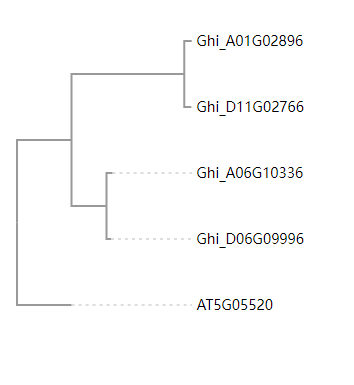

Phylotree.js(绘制进化树)
使用phylotree.js绘制进化树#

Tip
nwk示例文件: AT2G01080_mafft.nwk
((((Ghi_A01G00036:0.00053,Ghi_D01G00036:0.01923)0.995:0.09853,(Ghi_A03G13296:0.01822,Ghi_D02G12776:0.00318):0.04347)0.894:0.08498,(Ghi_A05G09376:0.11190,Ghi_D05G04441:0.03452)1.000:1.44064)0.610:0.06912,AT2G01080:0.06912);
<link rel="stylesheet" type="text/css" href="http://yanglab.hzau.edu.cn/static/resource_js/exp/phylotree.css">
<link rel="stylesheet" type="text/css" href="http://yanglab.hzau.edu.cn/static/css/bootstrap.min.css">
<script type="text/javascript" charset="utf8" src="http://code.jquery.com/jquery-1.10.2.min.js"></script>
<script type="text/javascript" charset="utf8" src="http://yanglab.hzau.edu.cn/static/resource_js/exp/d3.v3.min.js"></script>
<script type="text/javascript" charset="utf8" src="http://yanglab.hzau.edu.cn/static/js/underscore-min.js"></script>
<script type="text/javascript" charset="utf8" src="http://yanglab.hzau.edu.cn/static/resource_js/exp/phylotree.js"></script>
<div>
<svg id="tree_display" style="width:320px"></svg>
</div>
<script>
$(document).ready(function() {
var file_name = './AT2G01080_mafft.nwk'; //加载nwk进化树文件，自行修改文件路径
d3.text(file_name, function(error, newick) {
var height = 550,
width = 290,
tree = d3.layout.phylotree()
.svg(d3.select("#tree_display"))
.options({
'left-right-spacing': 'fit-to-step',
'top-bottom-spacing': 'fit-to-size',
'selectable': true,
'reroot': false,
'hide': false,
'show-scale': false
})
.align_tips(true)
.font_size(14)
.size([height, width])
.node_circle_size(0);
tree(newick).layout();
function my_node_style_text(node) {
node['text-italic'] = !node['text-italic'];
d3.layout.phylotree.trigger_refresh(tree);
}
function my_menu_title(node) {
if (node['text-italic']) {
return "Remove Italics";
}
return "Custom function";
}
tree.get_nodes()
.filter(d3.layout.phylotree.is_leafnode)
.forEach(function(tree_node) {
d3.layout.phylotree.add_custom_menu(tree_node, // add to this node
my_menu_title, // display this text for the menu
function() { //Custom function
console.log(tree_node['name'])
},
d3.layout.phylotree.is_leafnode
);
});
})
})
</script>
Tip
以下示例中, underscore-vue-min.js、phylotree-vue.js存放在public/js中, phylotree.css存放在public/css中, nwk文件放在public文件夹中。
其中, underscore.js文件使用http://yanglab.hzau.edu.cn/static/js/underscore-vue-min.js。
其中, phylotree.js文件使用http://yanglab.hzau.edu.cn/static/js/phylotree-vue.js。
<template>
<div>
<svg id="tree_display" style="width:300px;"></svg>
</div>
</template>
<script>
/* eslint-disable */
import { phylotree } from '@/../public/js/phylotree-vue.js'
export default {
name: 'tree',
components: {},
data() {
return {}
},
mounted() {
this.$nextTick(function() {
this.draw()
})
},
methods: {
draw() {
var file_name = './AT2G01080_mafft.nwk'
var that = this
d3.text(file_name, function(error, newick) {
if (error) {
that.error_show = true
return
} else {
that.error_show = false
}
var height = 500,
width = 290,
tree = d3.layout
.phylotree()
.svg(d3.select('#tree_display'))
.options({
'left-right-spacing': 'fit-to-step',
'top-bottom-spacing': 'fit-to-size',
selectable: true,
reroot: false,
hide: false,
'show-scale': false
})
.align_tips(true)
.font_size(14)
.size([height, width])
.node_circle_size(0)
tree(newick).layout()
function my_menu_title(node) {
if (node['text-italic']) {
return 'Remove Italics'
}
return 'console.log ' + node['name']
}
tree
.get_nodes()
.filter(d3.layout.phylotree.is_leafnode)
.forEach(function(tree_node) {
d3.layout.phylotree.add_custom_menu(
tree_node, // add to this node
my_menu_title, // display this text for the menu
function() {
console.log(tree_node['name'])
},
d3.layout.phylotree.is_leafnode
)
})
var tree_arr = tree.get_nodes()
var genes = []
tree_arr.forEach(function(eachnode) {
if (tree.is_leafnode(eachnode)) {
genes.push(eachnode.name)
}
})
that.genes = genes.join(',')
})
}
}
}
</script>
<style scoped>
/* 使用进化树页面到css文件的相对路径, 需自行调整 */
@import '../../../public/css/phylotree.cs';
</style>